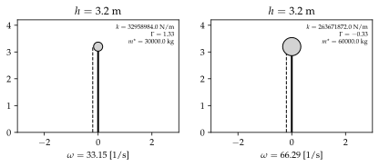
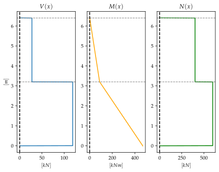

%run style_and_packages.ipynb15 Beispiel: Antwortspektrenverfahren an einem Rahmen
15.1 Aufgabenstellung
Dies ist eine Weiterführung des bereits bekannten Rahmentragwerks aus ?sec-mms_steif.

Gesucht:
Eigenkreisfrequenz \(\omega\)
Eigenformen - Normierung auf \[\phi_1^T = \begin{bmatrix} & 1\\ \end{bmatrix} \] \[\phi_2^T = \begin{bmatrix} & 1\\ \end{bmatrix}\]
Skizze der Eigenformen
Statische Ersatzkräfte mit elastischem Antwortspektrum aus (Schweizerischer Ingenieur- und Architektenverein (SIA), 2020) Abs. 16.2.3 auf Stockwerksebene. Überlagerung mit der SRSS-Methode.
Gegeben:
- Dehnsteifigkeit aller Stäbe \(E\cdot A = \infty\)
- Baugrundklasse B
- Erdbebenzone Z2
omega, t, l, m_1, m_2, E,I, H = sp.symbols('omega, t, l, m_1, m_2, E, I, H')
omega_n = sp.symbols('omega_n')params = {E: 30*10**3 *unit.N/unit.mm**2,
I:2*10**9*unit.mm**4,
m_1:2*20000*unit.N*unit.second**2/unit.m,
m_2:20000*unit.N*unit.second**2/unit.m,
H:3.2*unit.m,
}
params_plot = convert.param_value(params)
render.dict_to_table(params)| \(E = \frac{30000 \text{N}}{\text{mm}^{2}}\) | \(H = 3.2 \text{m}\) |
| \(I = 2000000000 \text{mm}^{4}\) | \(m_{1} = \frac{40000 \text{N} \text{s}^{2}}{\text{m}}\) |
| \(m_{2} = \frac{20000 \text{N} \text{s}^{2}}{\text{m}}\) |
15.2 Musterlösung
Die Lösung deckt sich mit Kapitel 11.2 bis zu den ermittelten Eigenformen.
15.2.1 Steifigkeitsmatrix \(\mathbf{K}\)
15.2.1.1 Horizontale Steifigkeit
k_1, k_2 = sp.symbols('k_1, k_2')
params['k_1'] = 2*(12 * 2*E*I / H**3).subs(params).simplify().evalf(6)
params['k_2'] = 2*(12 * E*I / H**3).subs(params).simplify().evalf(6)
K = sp.Matrix([[k_1 + k_2, -k_2],[-k_2, k_2]])
render.eq_display(sp.MatrixSymbol('K', 2,2), K,
sp.MatrixSymbol('K', 2,2), K.subs(params),
)\[\begin{equation}\mathbf{K} = \left[\begin{matrix}k_{1} + k_{2} & - k_{2}\\- k_{2} & k_{2}\end{matrix}\right]\end{equation}\]
\[\begin{equation}\mathbf{K} = \left[\begin{matrix}\frac{1.31836 \cdot 10^{8} \text{N}}{\text{m}} & - \frac{4.39453 \cdot 10^{7} \text{N}}{\text{m}}\\- \frac{4.39453 \cdot 10^{7} \text{N}}{\text{m}} & \frac{4.39453 \cdot 10^{7} \text{N}}{\text{m}}\end{matrix}\right]\end{equation}\]
15.2.2 Eigenvektoren
15.2.2.1 Massenmatrix \(\mathbf{M}\)
m_1, m_2 = sp.symbols('m_1, m_2')
M = sp.Matrix([[m_1, 0],[0, m_2]])
render.eq_display(sp.MatrixSymbol('M', 2,2), M,
sp.MatrixSymbol('M', 2,2), M.subs(params))\[\begin{equation}\mathbf{M} = \left[\begin{matrix}m_{1} & 0\\0 & m_{2}\end{matrix}\right]\end{equation}\]
\[\begin{equation}\mathbf{M} = \left[\begin{matrix}\frac{40000 \text{N} \text{s}^{2}}{\text{m}} & 0\\0 & \frac{20000 \text{N} \text{s}^{2}}{\text{m}}\end{matrix}\right]\end{equation}\]
15.2.2.2 Eigenkreisfrequenzen
eq_omega = sp.det(K-omega_n**2*M)
omega_n_solve = sp.solve(eq_omega, omega_n)
omega_1 = omega_n_solve[1]
omega_2 = omega_n_solve[3]
render.eq_display('omega_1', omega_1.subs(params).simplify().evalf(3),
'omega_2', omega_2.subs(params).simplify().evalf(3))\[\begin{equation}\omega_{1} = \frac{33.1}{\text{s}}\end{equation}\]
\[\begin{equation}\omega_{2} = \frac{66.3}{\text{s}}\end{equation}\]
15.2.2.3 Eigenvektoren \(\phi\)
phi_11, phi_21, phi_12, phi_22 = sp.symbols('phi_11, phi_21, phi_12, phi_22')
params['phi_21'] = 1
phi_1 = sp.Matrix([[phi_11], [phi_21]])
phi_11 = list(sp.solve((K-omega_1**2 *M)*phi_1, phi_11).values())[0]
params['phi_11'] = phi_11.subs(params).simplify()
render.eq_display(sp.simplify((K-omega_1**2 *M)*phi_1),sp.Matrix([[0],[0]]),
sp.MatrixSymbol('phi_1', 2,1),sp.simplify(phi_1.subs(params)).evalf(3))\[\begin{equation}\left[\begin{matrix}\frac{- k_{2} m_{2} \phi_{21} + \frac{\phi_{11} \left(- k_{2} m_{1} + m_{2} \left(k_{1} + k_{2}\right) + \sqrt{k_{1}^{2} m_{2}^{2} - 2 k_{1} k_{2} m_{1} m_{2} + 2 k_{1} k_{2} m_{2}^{2} + k_{2}^{2} m_{1}^{2} + 2 k_{2}^{2} m_{1} m_{2} + k_{2}^{2} m_{2}^{2}}\right)}{2}}{m_{2}}\\\frac{- k_{2} m_{1} \phi_{11} + \frac{\phi_{21} \left(k_{2} m_{1} - m_{2} \left(k_{1} + k_{2}\right) + \sqrt{k_{1}^{2} m_{2}^{2} - 2 k_{1} k_{2} m_{1} m_{2} + 2 k_{1} k_{2} m_{2}^{2} + k_{2}^{2} m_{1}^{2} + 2 k_{2}^{2} m_{1} m_{2} + k_{2}^{2} m_{2}^{2}}\right)}{2}}{m_{1}}\end{matrix}\right] = \left[\begin{matrix}0\\0\end{matrix}\right]\end{equation}\]
\[\begin{equation}\mathbf{\phi}_{1} = \left[\begin{matrix}0.5\\1.0\end{matrix}\right]\end{equation}\]
params['phi_22'] = 1
phi_2 = sp.Matrix([[phi_12], [phi_22]])
phi_12 = list(sp.solve((K-omega_2**2 *M)*phi_2, phi_12).values())[0]
params['phi_12'] = phi_12.subs(params).simplify()
render.eq_display(sp.simplify((K-omega_2**2 *M)*phi_2),sp.Matrix([[0],[0]]),
sp.MatrixSymbol('phi_2', 2,1),sp.simplify(phi_2.subs(params)).evalf(3))\[\begin{equation}\left[\begin{matrix}\frac{- k_{2} m_{2} \phi_{22} + \frac{\phi_{12} \left(- k_{2} m_{1} + m_{2} \left(k_{1} + k_{2}\right) - \sqrt{k_{1}^{2} m_{2}^{2} - 2 k_{1} k_{2} m_{1} m_{2} + 2 k_{1} k_{2} m_{2}^{2} + k_{2}^{2} m_{1}^{2} + 2 k_{2}^{2} m_{1} m_{2} + k_{2}^{2} m_{2}^{2}}\right)}{2}}{m_{2}}\\\frac{- k_{2} m_{1} \phi_{12} + \frac{\phi_{22} \left(k_{2} m_{1} - m_{2} \left(k_{1} + k_{2}\right) - \sqrt{k_{1}^{2} m_{2}^{2} - 2 k_{1} k_{2} m_{1} m_{2} + 2 k_{1} k_{2} m_{2}^{2} + k_{2}^{2} m_{1}^{2} + 2 k_{2}^{2} m_{1} m_{2} + k_{2}^{2} m_{2}^{2}}\right)}{2}}{m_{1}}\end{matrix}\right] = \left[\begin{matrix}0\\0\end{matrix}\right]\end{equation}\]
\[\begin{equation}\mathbf{\phi}_{2} = \left[\begin{matrix}-1.0\\1.0\end{matrix}\right]\end{equation}\]
15.2.2.4 Orthogonalitätsbedingung
render.eq_display(sp.MatrixSymbol('phi_1',2,1).T*sp.MatrixSymbol('M', 2,2)*sp.MatrixSymbol('phi_1',2,1),(phi_1.T*M*phi_1).subs(params).evalf(3),
sp.MatrixSymbol('phi_2',2,1).T*sp.MatrixSymbol('M', 2,2)*sp.MatrixSymbol('phi_2',2,1),(phi_2.T*M*phi_2).subs(params).evalf(3),
sp.MatrixSymbol('phi_2',2,1).T*sp.MatrixSymbol('M', 2,2)*sp.MatrixSymbol('phi_1',2,1),(phi_2.T*M*phi_1).subs(params).evalf(3),
sp.MatrixSymbol('phi_1',2,1).T*sp.MatrixSymbol('M', 2,2)*sp.MatrixSymbol('phi_2',2,1),(phi_1.T*M*phi_2).subs(params).evalf(3))\[\begin{equation}\mathbf{\phi}_{1}^{T} \mathbf{M} \mathbf{\phi}_{1} = \left[\begin{matrix}\frac{3.0 \cdot 10^{4} \text{N} \text{s}^{2}}{\text{m}}\end{matrix}\right]\end{equation}\]
\[\begin{equation}\mathbf{\phi}_{2}^{T} \mathbf{M} \mathbf{\phi}_{2} = \left[\begin{matrix}\frac{6.0 \cdot 10^{4} \text{N} \text{s}^{2}}{\text{m}}\end{matrix}\right]\end{equation}\]
\[\begin{equation}\mathbf{\phi}_{2}^{T} \mathbf{M} \mathbf{\phi}_{1} = \left[\begin{matrix}0\end{matrix}\right]\end{equation}\]
\[\begin{equation}\mathbf{\phi}_{1}^{T} \mathbf{M} \mathbf{\phi}_{2} = \left[\begin{matrix}0\end{matrix}\right]\end{equation}\]
Für die Steifigkeitsmatrix:
render.eq_display(sp.MatrixSymbol('phi_1',2,1).T*sp.MatrixSymbol('K', 2,2)*sp.MatrixSymbol('phi_1',2,1),sp.simplify((phi_1.T*K*phi_1).subs(params)).evalf(3),
sp.MatrixSymbol('phi_2',2,1).T*sp.MatrixSymbol('K', 2,2)*sp.MatrixSymbol('phi_2',2,1),sp.simplify((phi_2.T*K*phi_2).subs(params)).evalf(3),
sp.MatrixSymbol('phi_2',2,1).T*sp.MatrixSymbol('K', 2,2)*sp.MatrixSymbol('phi_1',2,1),sp.simplify((phi_2.T*K*phi_1).subs(params)).evalf(4),
sp.MatrixSymbol('phi_1',2,1).T*sp.MatrixSymbol('K', 2,2)*sp.MatrixSymbol('phi_2',2,1),sp.simplify((phi_1.T*K*phi_2).subs(params)).evalf(4))\[\begin{equation}\mathbf{\phi}_{1}^{T} \mathbf{K} \mathbf{\phi}_{1} = \left[\begin{matrix}\frac{3.3 \cdot 10^{7} \text{N}}{\text{m}}\end{matrix}\right]\end{equation}\]
\[\begin{equation}\mathbf{\phi}_{2}^{T} \mathbf{K} \mathbf{\phi}_{2} = \left[\begin{matrix}\frac{2.64 \cdot 10^{8} \text{N}}{\text{m}}\end{matrix}\right]\end{equation}\]
\[\begin{equation}\mathbf{\phi}_{2}^{T} \mathbf{K} \mathbf{\phi}_{1} = \left[\begin{matrix}0\end{matrix}\right]\end{equation}\]
\[\begin{equation}\mathbf{\phi}_{1}^{T} \mathbf{K} \mathbf{\phi}_{2} = \left[\begin{matrix}0\end{matrix}\right]\end{equation}\]
15.2.2.5 Eigenformen

15.2.3 Modale Analyse
Die Bewegungsgleichung für einen ungedämpften, frei schwingenden Mehrmassenschwinger lässt sich folgend beschreiben:
\[ \mathbf{M u''(t) + K u = 0} \tag{15.1}\]
Die Matrix-Gleichung beschreibt ein System aus Differentialgleichungen. Die Modale Analyse zielt darauf ab, diese zu entkoppeln. Bezogen auf den Mehrmassenschwinger heisst eine Entkoppelung, dass diese in Einmassenschwinger aufgeteilt werden. Dies wird nun schrittweise durchgeführt.
15.2.3.1 Modal- und Spektralmatrix
Mittels der Modal- und Spektralmatrix können die generalisierten Grössen ermittelt werden. Diese sind die Eigenschaften der einzelnen Einmassenschwinger. Die generalisierten Werte besitzen keine physikalische Bedeutung, sie sind abhängig von der Wahl der Eigenvektoren, welche bekanntlich von der Normierung abhängen.
Anhand der Bewegungsgleichung können die generalisierten Grössen bestimmt werden, es gilt:
\[ \Phi^T\mathbf{ M} \Phi \mathbf{u''(t)} + \Phi^T \mathbf{K} \Phi \mathbf{u(t)} = 0 \tag{15.2}\]
\[ \mathbf{M^*u''(t) + K^* u(t) = 0} \tag{15.3}\]
Alle \(N\)-Eigenwerte und alle \(N\)-Eigenvektoren können kompakt mit Matrizen ausgedrückt werden:
Phi = sp.Matrix([[phi_1, phi_2]])
Omega = sp.Matrix([[omega_1, 0],[0, omega_2]])
render.eq_display('Modalmatrix', 'Phi',
sp.MatrixSymbol('Phi', 2, 2), Phi.subs(params).evalf(4),
'Spektralmatrix', 'Omega^2',
sp.MatrixSymbol('Omega^2', 2, 2), (Omega**2).subs(params).evalf(4))\[\begin{equation}Modalmatrix = \Phi\end{equation}\]
\[\begin{equation}\mathbf{\Phi} = \left[\begin{matrix}0.5 & -1.0\\1.0 & 1.0\end{matrix}\right]\end{equation}\]
\[\begin{equation}Spektralmatrix = \Omega^{2}\end{equation}\]
\[\begin{equation}\mathbf{\Omega}^{2} = \left[\begin{matrix}\frac{1099.0}{\text{s}^{2}} & 0\\0 & \frac{4395.0}{\text{s}^{2}}\end{matrix}\right]\end{equation}\]
15.2.3.2 Generalisierte Grössen
M_star = Phi.T * M * Phi
K_star = Phi.T * K * Phi
render.eq_display(sp.MatrixSymbol('M^\star', 2,2),sp.simplify(M_star.subs(params)).evalf(5),
sp.MatrixSymbol('K^\star', 2,2),sp.simplify(K_star.subs(params)).evalf(5))
\[\begin{equation}\mathbf{M}^{\star} = \left[\begin{matrix}\frac{30000.0 \text{N} \text{s}^{2}}{\text{m}} & 0\\0 & \frac{60000.0 \text{N} \text{s}^{2}}{\text{m}}\end{matrix}\right]\end{equation}\]
\[\begin{equation}\mathbf{K}^{\star} = \left[\begin{matrix}\frac{3.2959 \cdot 10^{7} \text{N}}{\text{m}} & 0\\0 & \frac{2.6367 \cdot 10^{8} \text{N}}{\text{m}}\end{matrix}\right]\end{equation}\]
15.2.3.3 Kontrolle der modalen Transformation
Durch die Transformation in generalisierte Grössen dürfen sich die Eigenkreisfrequenzen nicht ändern, da die entkoppelten EMS jeweils eine dieser beschreibt.
Durch Einsetzen der modalen Grössen in Gleichung 15.4 kann mit den ermittelten Kreisfrequenzen kontrolliert werden.
\[ \omega_n = \sqrt{\frac{k}{m}} \tag{15.4}\]
omega_1_kontrolle = sp.sqrt(K_star[0] / M_star[0])
omega_2_kontrolle = sp.sqrt(K_star[3] / M_star[3])
render.eq_display('omega_1', omega_1.subs(params).simplify().evalf(3),
'omega_1_modal', omega_1_kontrolle.subs(params).simplify().evalf(3),
'omega_2', omega_2.subs(params).simplify().evalf(4),
'omega_2_modal', omega_2_kontrolle.subs(params).simplify().evalf(4))
\[\begin{equation}\omega_{1} = \frac{33.1}{\text{s}}\end{equation}\]
\[\begin{equation}\omega_{1 modal} = \frac{33.1}{\text{s}}\end{equation}\]
\[\begin{equation}\omega_{2} = \frac{66.29}{\text{s}}\end{equation}\]
\[\begin{equation}\omega_{2 modal} = \frac{66.29}{\text{s}}\end{equation}\]
15.2.3.4 Partizipationsfaktor \(\Gamma\)
Durch die modalen Grössen wissen wir wie die entkoppelten Einmassenschwinger definiert sind, bzw. welche Eigenschaften diese besitzen. Die Verteilung des Partizipationsfaktor gibt einen direkten Hinweis, welcher Eigenmode an der Gesamtanwort den grössten Einfluss (beteiligt bzw. partizipiert) hat.
\[ \Gamma_n = \frac{\Phi_n^T \mathbf{M 1}}{\Phi_n^T \mathbf{M}\Phi_n} \tag{15.5}\]
In allgemeiner Form lautet der Partizipationsfaktor:
\[ \Gamma_n = \frac{\Phi_n^T \mathbf{M r^\star}}{\Phi_n^T \mathbf{M}\Phi_n} \tag{15.6}\]
\(\mathbf{r^\star}\) beschreibt die Starrkörperverschiebung infolge der Erdbebenanregung \(u_g\) am Fusspunkt des Gesamtsystems.
\[ \mathbf{r^\star} = \begin{bmatrix} FHG_1 \\ FHG_2 \end{bmatrix}= \begin{bmatrix} \cos(0) \\ \cos(0) \end{bmatrix}= \begin{bmatrix} 1 \\ 1 \end{bmatrix}= \mathbf{1} \tag{15.7}\]
Die Partizipationsmatrix lässt sich direkt durch folgende Gleichung ermitteln:
\[ \Gamma = M^{\star-1} \cdot \Phi^T \cdot M \cdot 1 \tag{15.8}\]
Gelöst mit Gleichung 15.8:
one_vec = sp.ones(2,1)
Gamma = M_star**-1 * Phi.T * M*one_vec
render.eq_display(
sp.MatrixSymbol('Gamma',2,1), Gamma.subs(params).evalf(3))\[\begin{equation}\mathbf{\Gamma} = \left[\begin{matrix}1.33\\-0.333\end{matrix}\right]\end{equation}\]
Gelöst mit Gleichung 15.6:
gamma_1 = (phi_1.T*M*one_vec)[0]/(phi_1.T*M*phi_1)[0]
gamma_2 = (phi_2.T*M*one_vec)[0]/(phi_2.T*M*phi_2)[0]
gamma_sqr = sp.Matrix([[gamma_1**2],[gamma_2**2]])
render.eq_display('Gamma_1', gamma_1,
'Gamma_1', gamma_1.subs(params).evalf(3),
'Gamma_2', gamma_2,
'Gamma_2', gamma_2.subs(params).evalf(3),
sp.MatrixSymbol('Gamma^2_n',2,1),gamma_sqr.subs(params).evalf(3))\[\begin{equation}\Gamma_{1} = \frac{m_{1} \phi_{11} + m_{2} \phi_{21}}{m_{1} \phi_{11}^{2} + m_{2} \phi_{21}^{2}}\end{equation}\]
\[\begin{equation}\Gamma_{1} = 1.33\end{equation}\]
\[\begin{equation}\Gamma_{2} = \frac{m_{1} \phi_{12} + m_{2} \phi_{22}}{m_{1} \phi_{12}^{2} + m_{2} \phi_{22}^{2}}\end{equation}\]
\[\begin{equation}\Gamma_{2} = -0.333\end{equation}\]
\[\begin{equation}\mathbf{\Gamma}^{2}_{n} = \left[\begin{matrix}1.78\\0.111\end{matrix}\right]\end{equation}\]
15.2.3.5 Effektive Modale Massen
Durch Multiplikation der Modalen Massen mit dem Partizipationsfaktor resultieren die effektiven Modalen Massen.
m_1_eff = gamma_1**2 * M_star[0]
m_2_eff = gamma_2**2 * M_star[3]
render.eq_display('m_1eff', m_1_eff.subs(params).evalf(3),
'm_2eff', m_2_eff.subs(params).evalf(3),
'm_tot', (m_1_eff+m_2_eff).subs(params).evalf(3))\[\begin{equation}m_{1eff} = \frac{5.33 \cdot 10^{4} \text{N} \text{s}^{2}}{\text{m}}\end{equation}\]
\[\begin{equation}m_{2eff} = \frac{6.67 \cdot 10^{3} \text{N} \text{s}^{2}}{\text{m}}\end{equation}\]
\[\begin{equation}m_{tot} = \frac{6.0 \cdot 10^{4} \text{N} \text{s}^{2}}{\text{m}}\end{equation}\]
15.2.3.6 Modale Höhen
one_vec = sp.ones(2,1)
H_matrix = sp.Matrix([H, H])
H_modal = (H_matrix.T*M*Phi).T.multiply_elementwise((Phi.T*M*one_vec).applyfunc(lambda x: x**-1))
render.eq_display(
sp.MatrixSymbol('H', 2,1), H_matrix,
sp.MatrixSymbol('H', 2,1), H_modal,
sp.MatrixSymbol('H', 2,1), H_modal.subs(params).evalf(3),
)\[\begin{equation}\mathbf{H} = \left[\begin{matrix}H\\H\end{matrix}\right]\end{equation}\]
\[\begin{equation}\mathbf{H} = \left[\begin{matrix}\frac{H m_{1} \phi_{11} + H m_{2} \phi_{21}}{m_{1} \phi_{11} + m_{2} \phi_{21}}\\\frac{H m_{1} \phi_{12} + H m_{2} \phi_{22}}{m_{1} \phi_{12} + m_{2} \phi_{22}}\end{matrix}\right]\end{equation}\]
\[\begin{equation}\mathbf{H} = \left[\begin{matrix}3.2 \text{m}\\3.2 \text{m}\end{matrix}\right]\end{equation}\]
hoehe = list(H_modal.subs(params).evalf(3)/unit.m)
hoehe = [np.float64(i).round(2) for i in hoehe]
masse = list(M_star.subs(params)/unit.N/unit.second**2 * unit.m)
masse = [np.float64(i).round(2) for i in masse if i != 0]
steifigkeiten = list(K_star.subs(params)/unit.N * unit.m)
steifigkeiten = [np.float64(i).round(2) for i in steifigkeiten if i != 0]
omegas = list(Omega.subs(params)*unit.second)
omegas = [np.float64(i).round(2) for i in omegas if i != 0]
gammas = list(Gamma.subs(params).evalf(3))
gammas = [np.float64(i).round(2) for i in gammas if i != 0]
plot_einmassenschwinger(hoehe, masse, steifigkeiten, omegas, gammas)
15.2.4 Elastisches Antwortspektrum
Dem Vorgehen nach (Schweizerischer Ingenieur- und Architektenverein (SIA), 2020) Abs. 16.2.3.1 entsprechend, werden folgende Parameter definiert:
- Baugrundklasse B
- Erdbebenzone Z2
- \(a_{gd} = 1.0 \text{ M}/\text{s}^2\)
a_gd = 1*unit.m/unit.second**215.2.4.1 Grundschwingzeit
Die Grundschwingzeit kann anhand der bereits ermittelten Eigenkreisfrequenzen ermittelt werden.
T_1 = (omega_1 /(2*sp.pi))**-1
T_2 = (omega_2 /(2*sp.pi))**-1
render.eq_display('T_1', T_1.subs(params).evalf(3),
'T_2', T_2.subs(params).evalf(3),
)\[\begin{equation}T_{1} = 0.19 \text{s}\end{equation}\]
\[\begin{equation}T_{2} = 0.0948 \text{s}\end{equation}\]
15.2.4.2 Elastisches Antwortspektrum
S_e_1 = antwortspektrum(a_gd, T_1.subs(params).evalf(3), Baugrundklasse='B')
render.eq_display('S_e_1', S_e_1.evalf(3))| \(S = 1.2\) | \(T_{B} = 0.08 \text{s}\) |
| \(T_{C} = 0.35 \text{s}\) | \(T_{D} = 2.0 \text{s}\) |
| \(\eta = 1\) |
\[\begin{equation}S_{e} = 2.5 S_{} a_{gd} \eta\end{equation}\]
\[\begin{equation}S_{e 1} = \frac{3.0 \text{m}}{\text{s}^{2}}\end{equation}\]
S_e_2 = antwortspektrum(a_gd, T_2.subs(params).evalf(3), Baugrundklasse='B')
render.eq_display('S_e_2', S_e_2.evalf(3))| \(S = 1.2\) | \(T_{B} = 0.08 \text{s}\) |
| \(T_{C} = 0.35 \text{s}\) | \(T_{D} = 2.0 \text{s}\) |
| \(\eta = 1\) |
\[\begin{equation}S_{e} = 2.5 S_{} a_{gd} \eta\end{equation}\]
\[\begin{equation}S_{e 2} = \frac{3.0 \text{m}}{\text{s}^{2}}\end{equation}\]
15.2.4.3 Einwirkungen
f_11 = gamma_1*m_1_eff*phi_11*S_e_1
f_21 = gamma_1*m_2_eff*phi_21*S_e_1
f_12 = gamma_2*m_1_eff*phi_12*S_e_2
f_22 = gamma_2*m_2_eff*phi_22*S_e_2
f_jn = sp.Matrix([[f_11, f_12],[f_12,f_22]])
render.eq_display("f_11 ", "gamma_1*m_1_eff*phi_11*S_e_1",
"f_21" , "gamma_1*m_2_eff*phi_21*S_e_1",
"f_12" , "gamma_2*m_1_eff*phi_12*S_e_2",
"f_22" , "gamma_2*m_2_eff*phi_22*S_e_2",
sp.MatrixSymbol('f_jn', 2,2),f_jn.subs(params).evalf(3))\[\begin{equation}f_{11} = S_{e 1} \gamma_{1} m_{1 eff} \phi_{11}\end{equation}\]
\[\begin{equation}f_{21} = S_{e 1} \gamma_{1} m_{2 eff} \phi_{21}\end{equation}\]
\[\begin{equation}f_{12} = S_{e 2} \gamma_{2} m_{1 eff} \phi_{12}\end{equation}\]
\[\begin{equation}f_{22} = S_{e 2} \gamma_{2} m_{2 eff} \phi_{22}\end{equation}\]
\[\begin{equation}\mathbf{f}_{jn} = \left[\begin{matrix}1.07 \cdot 10^{5} \text{N} & 5.33 \cdot 10^{4} \text{N}\\5.33 \cdot 10^{4} \text{N} & - 6.67 \cdot 10^{3} \text{N}\end{matrix}\right]\end{equation}\]
15.2.4.4 Deformation
u_11 = gamma_1*phi_11*S_e_1/omega_1**2
u_21 = gamma_1*phi_21*S_e_1/omega_1**2
u_12 = gamma_2*phi_12*S_e_2/omega_2**2
u_22 = gamma_2*phi_22*S_e_2/omega_2**2
u_jn = sp.Matrix([[u_11, u_12],[u_12,u_22]])
render.eq_display(
"u_11" ," gamma_1*phi_11*S_e_1/omega_1**2",
"u_21" , "gamma_1*phi_21*S_e_1/omega_1**2",
"u_12" , "gamma_2*phi_12*S_e_2/omega_2**2",
"u_22" ,"gamma_2*phi_22*S_e_2/omega_2**2",
sp.MatrixSymbol('u_jn', 2,2),unit.convert_to(u_jn.subs(params).evalf(3),unit.mm))\[\begin{equation}u_{11} = \frac{S_{e 1} \gamma_{1} \phi_{11}}{\omega_{1}^{2}}\end{equation}\]
\[\begin{equation}u_{21} = \frac{S_{e 1} \gamma_{1} \phi_{21}}{\omega_{1}^{2}}\end{equation}\]
\[\begin{equation}u_{12} = \frac{S_{e 2} \gamma_{2} \phi_{12}}{\omega_{2}^{2}}\end{equation}\]
\[\begin{equation}u_{22} = \frac{S_{e 2} \gamma_{2} \phi_{22}}{\omega_{2}^{2}}\end{equation}\]
\[\begin{equation}\mathbf{u}_{jn} = \left[\begin{matrix}1.82 \text{mm} & 0.228 \text{mm}\\0.228 \text{mm} & - 0.228 \text{mm}\end{matrix}\right]\end{equation}\]
15.2.5 Überlagerung der EMS
Um die Entkoppelung rückzuführen, gilt es die erhaltenen Resultate zu überlagern. Dabei gibt es unterschiedliche Ansätze. Bei weit auseinander liegenden Eigenfrequenzen kann die SRSS-Überlagerung verwendet werden.
\[ V_{b2max} = \sqrt{\sum_{n=1}^2 f_{j,n}^2} \tag{15.9}\]
V_b1_max = sp.sqrt(f_11**2 + f_12**2)
V_b2_max = sp.sqrt(f_21**2 + f_22**2)
render.eq_display("V_b1_max" ,"sqrt(f_11**2 + f_12**2)",
'V_b1max',V_b1_max.subs(params).evalf(3),
"V_b2_max" , "sqrt(f_21**2 + f_22**2)",
'V_b2max', V_b2_max.subs(params).evalf(3))\[\begin{equation}V_{b1 max} = \sqrt{f_{11}^{2} + f_{12}^{2}}\end{equation}\]
\[\begin{equation}V_{b1max} = 1.19 \cdot 10^{5} \text{N}\end{equation}\]
\[\begin{equation}V_{b2 max} = \sqrt{f_{21}^{2} + f_{22}^{2}}\end{equation}\]
\[\begin{equation}V_{b2max} = 2.75 \cdot 10^{4} \text{N}\end{equation}\]
Deformationen:
\[ u_{bn} = \sqrt{\sum_{n=1}^2 u_{j,n}^2} \tag{15.10}\]
u_b1 = sp.sqrt(u_11**2 + u_12**2)
u_b2 = sp.sqrt(u_21**2 + u_22**2)
render.eq_display(
"u_b1" , "sqrt(u_11**2 + u_12**2)",
'u_b1',unit.convert_to(u_b1.subs(params).evalf(3), unit.mm),
"u_b2", "sqrt(u_21**2 + u_22**2)",
'u_b2', unit.convert_to(u_b2.subs(params).evalf(3),unit.mm))\[\begin{equation}u_{b1} = \sqrt{u_{11}^{2} + u_{12}^{2}}\end{equation}\]
\[\begin{equation}u_{b1} = 1.83 \text{mm}\end{equation}\]
\[\begin{equation}u_{b2} = \sqrt{u_{21}^{2} + u_{22}^{2}}\end{equation}\]
\[\begin{equation}u_{b2} = 3.65 \text{mm}\end{equation}\]
# Querkraft
V_x = sp.Piecewise((V_b1_max.subs(params)/unit.N, ((x>0)&(x<=H.subs(params_plot)))), (V_b2_max.subs(params)/unit.N, ((x>=H.subs(params_plot))&(x<=(H+H).subs(params_plot)))), (0,True))
# Biegemoment
C_1 = sp.symbols('C_1')
M_x = sp.integrate(-V_x, x) + C_1
C_1_solve = sp.solve(M_x.subs(x, (H+H).subs(params_plot)), C_1)[0]
M_x = M_x.subs(C_1, C_1_solve)
# Normalkraft
g = 10*unit.m/unit.second**2
N_x = sp.Piecewise(((m_1+m_2).subs(params)*g/unit.N, ((x>0)&(x<=H.subs(params_plot)))),(m_1.subs(params)*g/unit.N, ((x>=H.subs(params_plot))&(x<=(H+H).subs(params_plot)))), (0,True))
# Numerische Daten generieren
x_array = np.linspace(-0.01, float((H+H+0.01).subs(params_plot)), 1000)
V_x_lamb = sp.lambdify(x, V_x)
V_x_array = V_x_lamb(x_array)
M_x_lamb = sp.lambdify(x,M_x)
M_x_array = M_x_lamb(x_array)
N_x_lamb = sp.lambdify(x,N_x)
N_x_array = N_x_lamb(x_array)
# Figure und Axes erstellen
fig, (ax1, ax2, ax3) = plt.subplots(1, 3)
# Ersten Plot erstellen
ax1.plot(V_x_array/1000, x_array)
ax1.set_title('$V(x)$')
## Horizontale Linien
ax1.axhline(H.subs(params_plot),linestyle='dashed', color='gray',linewidth=1)
ax1.axhline((H+H).subs(params_plot),linestyle='dashed', color='gray',linewidth=1)
ax1.set_xlabel('$[kN]$')
ax1.set_ylabel('$[m]$')
ax1.axvline(0,linestyle='dashed', color='black')
# Zweiten Plot erstellen
ax2.plot(M_x_array/1000, x_array, color='orange')
ax2.set_title('$M(x)$')
## Horizontale Linien
ax2.axhline(H.subs(params_plot),linestyle='dashed', color='gray',linewidth=1)
ax2.axhline((H+H).subs(params_plot),linestyle='dashed', color='gray',linewidth=1)
ax2.set_xlabel('$[kNm]$')
ax2.axvline(0,linestyle='dashed', color='black')
# Dritten Plot erstellen
ax3.plot(N_x_array/1000, x_array, color='green')
ax3.set_title('$N(x)$')
ax3.set_xlabel('$[kN]$')
## Horizontale Linien
ax3.axhline(H.subs(params_plot),linestyle='dashed', color='gray',linewidth=1)
ax3.axhline((H+H).subs(params_plot),linestyle='dashed', color='gray',linewidth=1)
ax3.axvline(0,linestyle='dashed', color='black')
# Plots anzeigen
plt.show()
